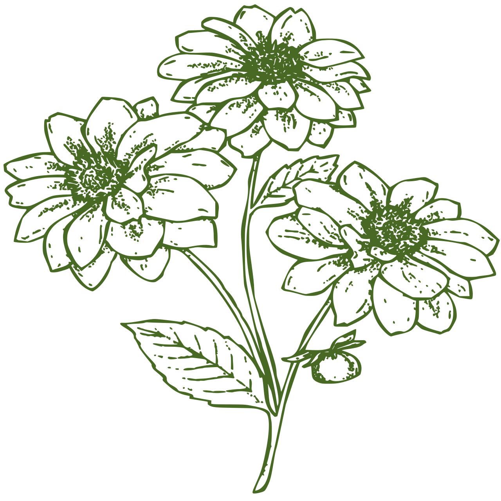
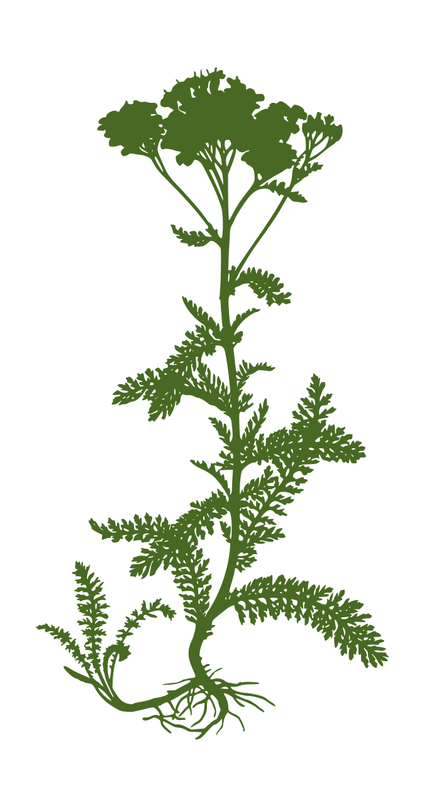

Welcome to Tapteal Native Plants, located in West Richland, Washington. Our aim is to locate, grow, and deliver native plants for those who wish to enjoy the benefits of their own native plant garden. We also supply plants for gardeners who want to establish a certified Heritage Garden.
The Heritage Garden Program is sponsored by our local conservation districts and provides residents in Benton and Franklin Counties with free technical assistance to establish low water-use landscapes utilizing native plants.
Our business started in 2017 after discovering we had to travel outside the Tri-Cities to purchase native plants for our own garden. We were inspired to create a business that makes it easier for customers to incorporate the rich landscape of various native plant species in their own yard and to support the interests of gardeners in the Mid-Columbia who enjoy the unique benefits of native, drought tolerant plants of Eastern Washington State.
 